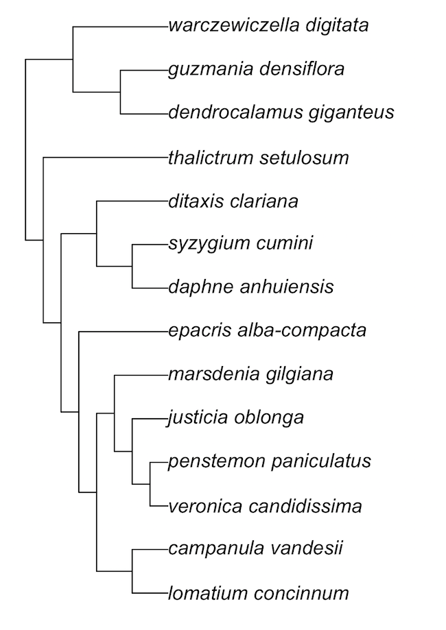

Introduction to the phylocomr package
Scott Chamberlain and Jeroen Ooms
2021-07-21
Source:vignettes/phylocomr.Rmd
phylocomr.Rmdphylocomr is an R client for Phylocom - a C library for Analysis of Phylogenetic Community Structure and Character Evolution.
Phylocom home page is at http://phylodiversity.net/phylocom/. The source code for Phylocom is at https://github.com/phylocom/phylocom/.
Phylocom is usually used either on the command line or through the R package picante, which has duplicated some of the Phylocom functionality.
Phylocom has been cited nearly 1000 times according to Google Scholar, so is clearly a very widely used piece of software. The goal with this package is to make it even easier to use - and in particular, to incorporate its use into a reproducible workflow entirely in R instead of going to the shell/command line for Phylocom usage. (Yes, some of Phylocom functionality is in picante, but not all.)
In terms of performance, some functionality will be faster here than in picante, but the maintainers of picante have re-written some Phylocom functionality in C/C++, so performance should be similar in those cases.
Install
Install ape for below examples:
install.packages('ape')Stable phylocomr version from CRAN
install.packages("phylocomr")Or, the development version from Github
devtools::install_github("ropensci/phylocomr")phylomatic
taxa_file <- system.file("examples/taxa", package = "phylocomr")
phylo_file <- system.file("examples/phylo", package = "phylocomr")
(taxa_str <- readLines(taxa_file))
(phylo_str <- readLines(phylo_file))
ph_phylomatic(taxa = taxa_str, phylo = phylo_str)aot
traits_file <- system.file("examples/traits_aot", package = "phylocomr")
phylo_file <- system.file("examples/phylo_aot", package = "phylocomr")
traitsdf_file <- system.file("examples/traits_aot_df", package = "phylocomr")
traits <- read.table(text = readLines(traitsdf_file), header = TRUE,
stringsAsFactors = FALSE)
phylo_str <- readLines(phylo_file)
ph_aot(traits = traits, phylo = phylo_str)bladj
ages_file <- system.file("examples/ages", package = "phylocomr")
phylo_file <- system.file("examples/phylo_bladj", package = "phylocomr")
ages_df <- data.frame(
a = c('malpighiales','salicaceae','fabaceae','rosales','oleaceae',
'gentianales','apocynaceae','rubiaceae'),
b = c(81,20,56,76,47,71,18,56)
)
phylo_str <- readLines(phylo_file)
res <- ph_bladj(ages = ages_df, phylo = phylo_str)
if (requireNamespace("ape")) {
library(ape)
plot(read.tree(text = res))
}
plot